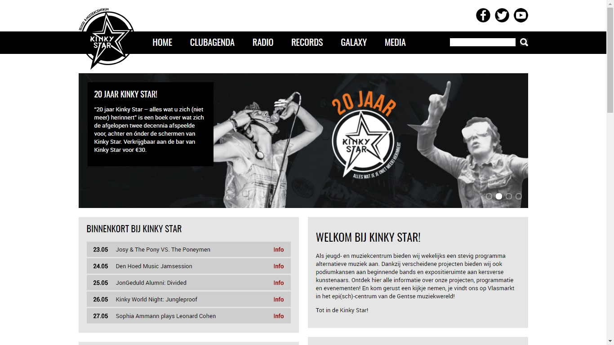
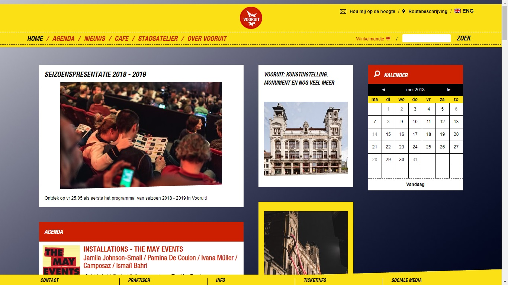
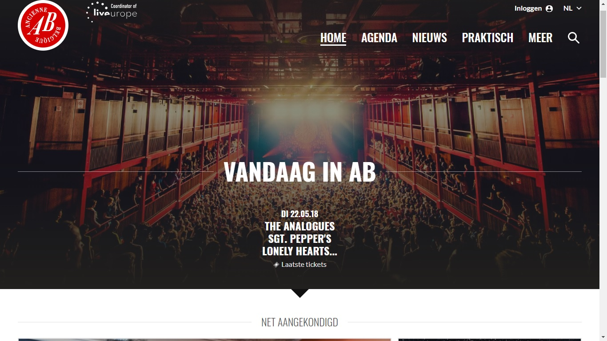
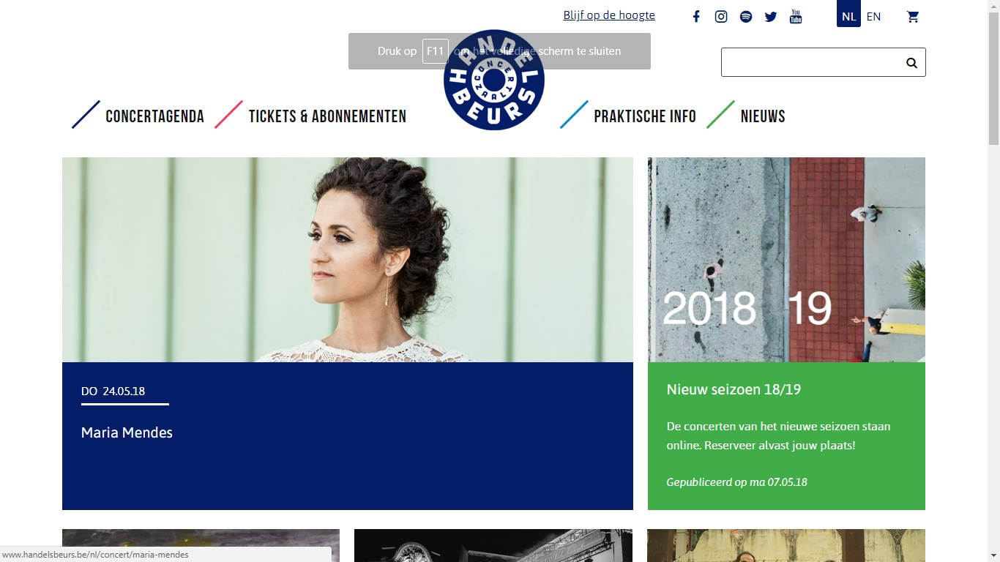

Concurrentie analyse
1. Jeugd- en Muziekcentrum Kinky Star vzw

www.kinkystar.com
positief
- duidelijke header en zoekbalk
- Visie/ missie Kinny Star direct zichtbaar
- verwijzingen naar sociaal media
- Uniek: minder gericht op de optredens meer gericht naar de beleving
- alle info van artiesten is snel te vinden
Negatief
- Website maar in 1 taal
- Minder duidelijk verwoord (Galaxy zijn projecten)
- Weinig praktische info
- geen routebeschrijving
2. Vooruit

http://vooruit.be/nl/
positief
- duidelijke header en zoekbalk
- door te klikken op het logo van de Vooruit kom je direct op de home pagina
- kalender
- ticketverkoop is duidelijk
- meerder talen
- bij hoveren muis over knoppen veranderen de knoppen van kleur
Negatief
- footer en header bewegen mee, waardoor de pagina zelf minder zichtbaar is ( header is te breed )
- druk ( alle verschillende activiteiten door elkaar op de home pagina )
- geen sponsors ?
3. Ab

https://www.abconcerts.be/nl/
positief
- duidelijke header en zoekbalk
- door te klikken op het logo van de AB kom je direct op de home pagina
- ticketverkoop is duidelijk
- meerder talen
- bij hoveren muis over knoppen komt er een lijn onder
- verwijzing naar social media
Negatief
- foto's en info is zeer groot op de pc -> geen duidelijk overzicht
- minder info artiesten, meer gericht naar verkoop
4. Handelsbeurs

http://www.handelsbeurs.be/nl
positief
- duidelijke header en zoekbalk
- door te klikken op het logo van de Handelsbeurs kom je direct op de home pagina
- bij hoveren muis over knoppen veranderen de lijnen naast de knop
Negatief
- alles zeer groot
- concertagenda en ticketverkoop & abonnementen komen plots onder elkaar te staan (verwarrend)